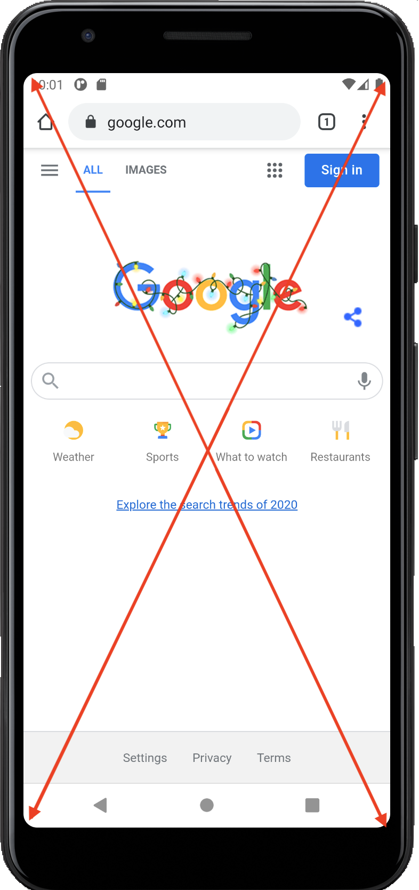

Условное применение стилей. Один html - разные стили.
[media type] [media features]@media not screen and (max-width: 400px) {
css-rules ...
}
[media query]
Адаптивная верстка
Условное применение стилей. Один html - разные стили.
[media type] [media features]@media not screen and (max-width: 400px) {
[media query]
Media type - тип устройства
Media features - технические характеристики устройства (mdn)
Логический оператор
.media-block {
background: yellow; // Стили для тачей
}
@media screen and (min-width: 768px) {
.media-block {
background: red; // Стили для планшета
}
}
@media screen and (min-width: 1280px) {
.media-block {
background: blue; // Стили для десктопа
}
}
Пример airbnb
iphone 8
Google Pixel
Физический пиксель (physical pixel) - ячейка на матрице
Виртуальный пиксель (device independent pixel) - независимый от устройства пиксель
Пиксельное соотношение (pixel ratio) - отношение между физическим и виртуальным пикселем
iphone 8
Google Pixel
Retina - маркетинговое название для дисплеев с высокой плотностью пикселей, используемый Apple
Viewport - видимая пользователю область страницы

<meta name="viewport" content="initial-scale=1, ...">
По-умолчанию, css-ширина вьюпорта в мобильном браузере - 980px
<meta name="viewport" content="width=device-width, initial-scale=1">
<img src="image-100px.jpg" alt="image"
srcset="image-100px.jpg 1x,
image-200px.jpg 2x,
image-400px.jpg 4x">
Плотность пикселей
<img src="image-100px.jpg" alt="image"
srcset="image-100px.jpg 1x,
image-200px.jpg 2x,
image-400px.jpg 4x"
sizes="(max-width: 1000px) 300px, 400px">
Медиавыражение Размер Фоллбек
при этом условии
<picture>
<source media="(min-width: 800px)" srcset="cat.jpg, cat-2x.jpg 2x">
<source media="(min-width: 450px)" srcset="cat-s.jpg, cat-s-2x.jpg 2x">
<source media="(min-width: 800px)" srcset="cat.webp, cat-2x.webp 2x">
<source media="(min-width: 450px)" srcset="cat-s.webp, cat-s-2x.webp 2x">
<img src="cat.jpg" srcset="cat-2x.jpg 2x" alt="cat">
</picture>
Пример с котиком от Google
Scalable Vector Graphics

Важные (критичные) элементы интерфейса, которые надо сразу показать можно не грузить отдельно
<img src="data:image/svg+xml;base64,[data]">
Ленивая загрузка - стратегия, при которой не критические ресурсы загружаются в тот момент, когда они нужны.
Для ленивой загрузки у img есть аттрибут loading. Он доступен с Chrome 77
Такая картинка загрузится, когда она окажется во вьюпорте пользователя.
<img src="image-100px.jpg" alt="image" loading="lazy">
// SVG-sprite
<svg style="display: none;">
<defs>
<symbol id="star">
<polygon points="..."/>
</symbol>
<symbol id="cat"...
</defs>
</svg>
// Непосредственное использование
<svg class="icon-star">
<use xlink:href="#star"/>
</svg>
// SVG-sprite
<svg style="display: none;">
<defs>
<symbol id="star">
<polygon points="..."/>
</symbol>
<symbol id="cat"...
</defs>
</svg>
// Непосредственное использование
<svg class="icon-star">
<use xlink:href="#star"/>
</svg>